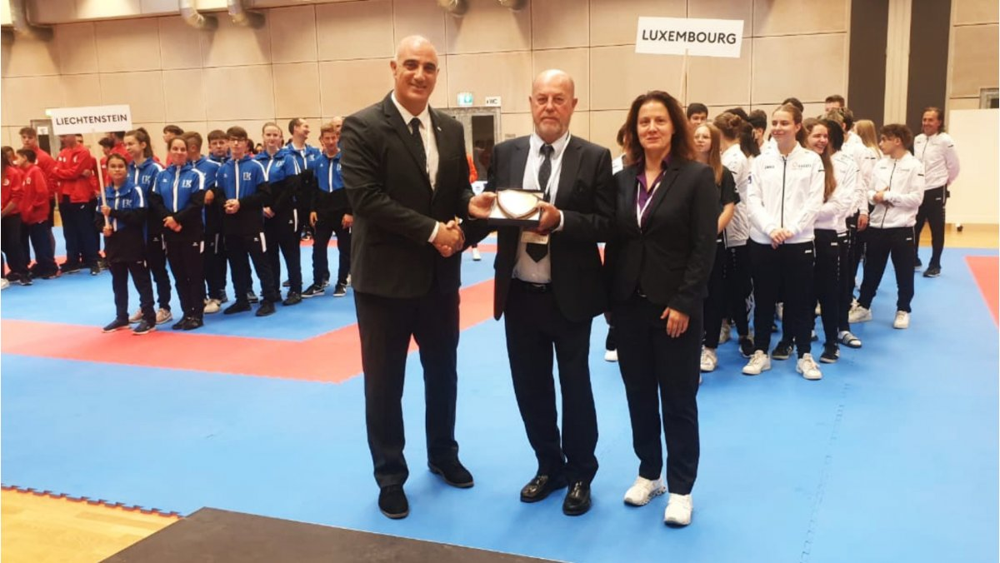

WKF President attends Small States of Europe Karate Championships
Mr Espinós travelled to Vaduz this past week to participate in the event and to attest to the progress of the sport in these countries. The head of Karate’s international governing body also addressed the congress of the Small States of Europe Karate Federation (SSEKF) as he shared the latest developments within the EKF and WKF
The inclusion of Karate in the sports programme of the next editions of the Games of the Small States of Europe to be held in Andorra in 2023 and Monaco in 2027, the evaluation of the progress of the Small States of Europe Karate Championships, and the elections of the SSEKF Referee Commission and Appeals Jury were among the main points on the agenda of the congress.WKF and EKF President Antonio Espinós said:
“The importance of events such as the Small States of Europe Karate Championships cannot be overstated. Our sport continues growing in all corners of the world and events such as the tournament this week in Liechtenstein help us confirm this progress."
“I want to thank the SSEKF and its president Andreas Vasileiou for their contribution to the growth of our sport and to the Liechtenstein Karate Federation president Katherine Broder for hosting such a high-level event here in Vaduz.”
Over 200 athletes from the eight small states of Europe gathered in Vaduz for the competition. Cyprus topped the final medal table. Luke Galea of Malta was one of the big names of the event as he claimed gold medals in both the Male Kumite -84kg and the Male Kumite Open categories. In the female competition, Francesca Gaglioti of San Marino took the star status with golds in Female Kumite Open and Female Kumite -55kg. Representatives of Luxembourg and Malta prevailed in senior divisions with six and five gold medals respectively.